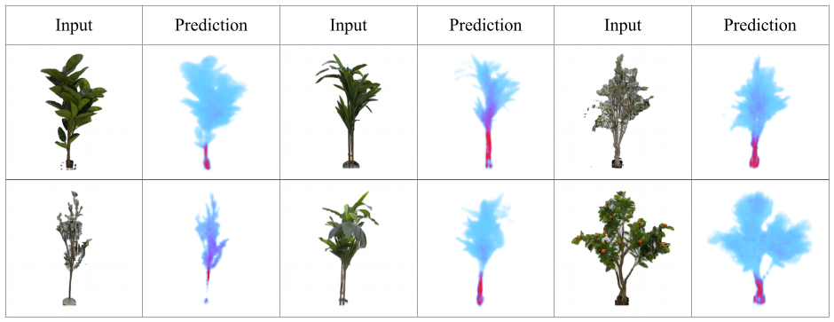

Model Predictions
Unlike existing monocular reconstruction methods, our network predicts spatially varying contact response in addition to occupancy.

Research Project Website
TL;DR: We introduce neural tactile fields that can be reconstructed from a single RGB image, enabling interaction-aware robotic planning by reasoning about physical contact costs rather than geometry alone.
University of Maryland, College Park
Overview
Robots operating in the real world must plan through environments that deform, yield, and reconfigure under contact, requiring interaction-aware 3D representations that extend beyond static geometric occupancy. To address this, we introduce neural tactile fields, a novel 3D representation that maps spatial locations to the expected tactile response upon contact. Our model predicts these neural tactile fields from a single monocular RGB image, the first method to do so. When integrated with off-the-shelf path planners, neural tactile fields enable robots to generate paths that avoid high-resistance objects while deliberately routing through low-resistance regions (e.g. foliage), rather than treating all occupied space as equally impassable. Empirically, our learning framework improves volumetric 3D reconstruction by 85.8% and surface reconstruction by 26.7% compared to existing monocular 3D reconstruction methods.
Showcase
Unlike existing monocular reconstruction methods, our network predicts spatially varying contact response in addition to occupancy.
We enable safe planning through objects by adjusting tolerance to anticipated contact response.
Planning through foilage:
Lower Tolerance
Higher Tolerance
Higher Tolerance
Planning through a heavy object:
Lower Tolerance
Higher Tolerance
Planning through a light object:
Lower Tolerance
Higher Tolerance
Our method demonstrates robust generalization to out-of-domain examples.
